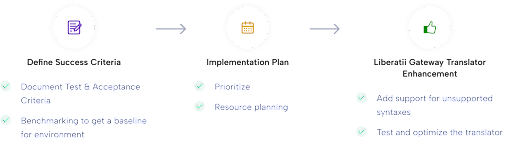
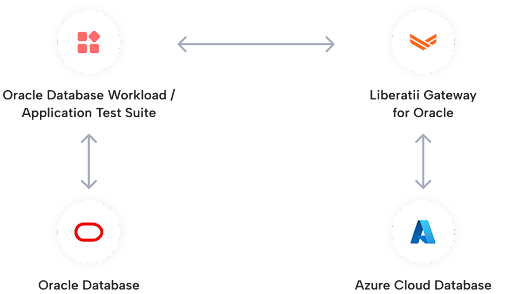
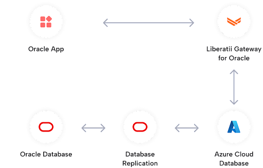

Updated October, 18 2023
Migration Playbook#
This document provides information and links to the actions that the Customer, Liberatii or both parties should perform to ensure an Oracle database and associated application are migrated quickly and successfully.

Each section will contain:
Outcomes: The results of the section
Customer, Liberatii or joint actions: Work that must be completed to generate the results
Notes, references and troubleshooting information
Pre-requisites#
A machine with:
Azure Data Studio
The Oracle, PostgreSQL and Liberatii Assessment extensions
Docker installed
The Liberatii Docker containers
If these machines are not already set up this process is covered in the technical assessment with specific instructions for the docker containers here.
Assessment#
The assessment phase has two produces two reports: an assessment of the Oracle database and an assessment of the Application driver. These reports will determine their suitability for migration to Liberatii Gateway.
The database assessment gathers enough information for Liberatii to ensure that the translator covers all functionality required by the applications under test and to construct a specification for a target Postgres database. This provides high confidence that the migrated applications will behave as expected.
The application driver assessment records a trace of the functionality required by the application. This ensures that the replacement Liberatii driver will allow the application to function correctly.

The database assessment report can be anonymized so that even column and table names are removed.
Outcomes#
A report that Liberatii can use to create a build plan and upgrade the translator to support the target applications.
Understanding of the Application Driver type (OCI, JDBC or ODBC)
In the case of OCI or thick JDBC applications, a database file (oci.db) of functionality
Customer Actions#
Connect Azure Data Studio to the Oracle database
Run the Liberatii Assessment
Send the resulting report to Liberatii
The full technical assessment guide can be found here with specific information concerning how to install docker here.
Perform the Driver Assessment
The driver assessment will determine the type of driver and, if applicable, create a database of driver functionality.
Plan and Build#
During the plan and build step Liberatii will work with the customer to produce a plan to construct an environment suitable for running the migrated applications.
This step constructs the migration notebook, a live document that tracks the progress of the migration. It contains tools to facilitate the remaining steps: schema migration, data transfer and testing.
The notebook references the migration success criteria, a spreadsheet produced in this step that contains technical proofpoints to ensure that the migration meets the needs of the customer. During each stage it is essential that the customer and Liberatii agree that the relevant criteria can be signed off.
The following criteria will be supplied in the success criteria document that should be acknowledged and agreed upon by both parties:
Scalability
Integration with the existing IT ecosystem
A sample of the success criteria can be downloaded here and a sample migration notebook can be downloaded here.
Outcomes#
A Postgres environment suitable for the target applications
A Liberatii Gateway connected to the Postgres environment
A Liberatii Data Platform that can control the Gateway
The migration notebook
The migration success criteria
Liberatii Actions#
Correct any issues that were detected by the Assessment
Create a build plan for the Postgres Database and Liberatii Gateway
Joint Actions#
Deploy the Postgres Database according to the build plan
Deploy the latest Liberatii Gateway and Liberatii Data Platform
Schema Conversion#
The schema conversion takes place by extracting the DDL from the source Oracle database and running it through Liberatii Gateway.

Criteria:
Data Types
Code Objects
DDL Statements
Customer Actions#
The success criteria document provides guidance to understand the requirements of this stage in the “Functional Compatibility (database)” section. When assessing the schema migration it is essential that both parties agree on the scope of the transformation. This includes the Data Types, Code Objects and DDL statements defined in the required schemas and referenced by the application and associated tests.
The Liberatii Data Platform can be instructed to perform the schema migration as follows:
Open the notebook available on the Liberatii Data Platform (This may be the same IP as the Liberatii Gateway, depending on the environment construction)
Ensure that the details are correct:
The Username, Password, IP address and Port of the Postgres Database
The IP address of the Liberatii Gateway
Run the “Test connectivity” steps, if these do not succeed, double check the previous details and the machine’s status in the Azure console
Run the “Configuration” and “Schema Migration” steps
Examine the results of the “dbt.migration_objects” table
This step can be performed by connecting Azure Data Studio to the target Postgres database and examining the table. Alternatively, the query can also be run using the notebook.
Joint Actions - Troubleshooting#
At this stage schema errors should be rare, as they will have been picked up by the assessment tool before this stage began. However, if they do occur they can most likely to corrected by some simple modifications to the schema data. Alternatively, some objects may not be required for the proper functioning of the application and can be ignored.
Examine the “dbt.migration_objects” table to find any objects that failed to migrate
select object_name, error, ddl1 from dbt.migration_objects where error <> ''
Examine the cause of the error:
Required type casts missing#
The error will appear as follows:
ERROR: function someFunctionName(...) does not exist
LINE .: select someFunctionName(...
HINT: No function matches the given name and argument types.
You might need to add explicit type casts.
The list of possible function overloads and their arguments can be viewed using the following query:
SELECT routines.routine_name, parameters.data_type, parameters.ordinal_position
FROM information_schema.routines
LEFT JOIN information_schema.parameters ON routines.specific_name=parameters.specific_name
WHERE routines.routine_name ilike 'someFunctionName'
ORDER BY routines.routine_name, parameters.ordinal_position
By wrapping the parameter in a cast, e.g. CAST(expression AS INTEGER) it is
often possible to overcome this error.
Data Transfer#
The data transfer stage is performed using the Migration Notebook. This must only be performed once the Schema Conversion has taken place and the results are correct.
Criteria:
Data Migration
Customer Actions#
Instruct the Liberatii Data Platform to transfer the data
This is performed using the notebook to perform the following actions:
A one-time data transfer
Migration of the database constraints
Verification of the transferred data
Setup of the Change Data Capture pipeline
Examine the results of the transfer
This requires the following steps:
Ensure that the data verification is correct by examining the results in the “dbt.migration_objects” table
Ensure that the Change-Data-Capture pipeline is functional by querying its status using the notebook.
Joint Actions - Troubleshooting#
Data Transfer and synchronization can fail for a number of reasons, including:
Network connectivity issues
Data formatting issues
Verification issues
DDL parsing issues
There are troubleshooting steps in the notebook that demonstrate modification of the configuration parameters to improve data throughput under different network conditions and data volumes. If these steps are exhausted then connectivity issues may be addressed by monitoring the network activity in the appropriate cloud console or local network logs.
If the data cannot be transferred as there is a mismatch in types then the operation will be marked as failed, e.g.:
Started operation id=1
Started operation id=2
Operation complete, status: Failed
The block following this in the migration notebook will provide a log of error messages. The detail of the messages can be increased by adjusting the verbose configuration parameter:
curl -s \
-H 'Content-Type: application/json' \
-d '{{ "value": 4 }}' \
{PLATFORM}/config/verbose
Verification issues are most often caused by concurrent modifications to the source database during the initial data transfer. If this occurs then there are two options that can be employed:
Restart the procedure from a read-only snapshot of the database
Perform the synchronization from a read-only snapshot of the database, then return to the verification stage
The second option may be useful if the volume of data is very high and performing a second transfer would be costly.
Test#
The testing phase of the project can be performed using Oracle Workload Replay. This allows a replay taken from the production database to tested against Postgres virtualised by Liberatii and Oracle simultaneously. This produces a table of statements with their latencies and checksums when running on both Oracle and Liberatii.
In addition to this, the customer should also run any test harnesses that they have and perform user testing on the application.
Criteria:
DML and DQL statements
Database Driver API compatibility
Latency and throughput
Query performance
Query optimisation (see later section)
Error Handling
Fitness for purpose
Downtime required for production switchover
Customer Actions#
Create a workload replay with the application running on Oracle
This is performed using the following SQL:
CREATE OR REPLACE DIRECTORY REPLAY_DIR AS '/tmp/replay_dir';
BEGIN
DBMS_WORKLOAD_CAPTURE.START_CAPTURE (
name => 'CAPTURE',
dir => 'REPLAY_DIR',
duration => NULL,
capture_sts => TRUE,
sts_cap_interval => 300);
END;
/
The application can then be run for a period of time that covers as much of its functionality as possible. Finally, the capture can be completed:
BEGIN
DBMS_WORKLOAD_CAPTURE.FINISH_CAPTURE ();
END;
/
This will create a replay capture in the /tmp/replay folder that may
be transferred to the Liberatii Data Platform and sandbox Oracle system for testing.
Joint Action - Workload replay#
Transfer and preparation
The workload must then be transferred to the sandbox Oracle system or run in cloned PDB. The following SQL will prepare this replay:
BEGIN
DBMS_WORKLOAD_REPLAY.PROCESS_CAPTURE (
capture_dir => 'REPLAY_DIR');
DBMS_WORKLOAD_REPLAY.INITIALIZE_REPLAY(
replay_name=> 'CAPTURE',
replay_dir => 'REPLAY_DIR');
DBMS_WORKLOAD_REPLAY.PREPARE_REPLAY (
synchronization => TRUE,
capture_sts => TRUE,
sts_cap_interval => 300);
END;
/
Once this is complete the /tmp/replay folder can be sent to Liberatii so
a workload replay can be performed.
Replaying the workload
Once Liberatii have a prepared workload replay a snapshot of the target database can be created and the workload replayed via the Liberatii Data Platform.
This is automated through the replay stage of the platform but may require
careful control of the target database and synchronisation pipelines.
Review results
The results of the replay are stored in the dbt.replay table where they
may be checked. If any statements produce different results they should be
run directly against both systems to understand the differences. If the latency
is too high for certain statements then this will have to be analyzed in detail.
Joint Action - Query Optimisation#
Any queries that perform too slowly should be refactored to suit their new environment. This is a joint action with the customer to determine the limits of what the queries must accomplish and agree to any modifications.
Cut over#
The final stage in the migration is to perform the cut over. This requires replacing the application driver with a Liberatii Database Connector.
At this stage the Change-Data-Capture pipeline can be reversed to keep the Oracle system up to date with the virtualised target database.
Criteria:
Manageability and Support
Customer Actions#
Replace the Database Connector with the Liberatii connector
Information on this process can be found in the Driver Assessment. Further information can be found in the Liberatii Connector Reference.
Joint Actions#
Reverse the Change-Data-Capture pipeline.
At the selected time of cut over, the customer can change the application connection string at the same time that Liberatii reverse the Change-Data-Capture pipeline.
This may be automated through the cutover stage of the migration
tool. However, as this needs careful synchronisation to minimise disruption this is
best performed as a joint action under careful observation.
Analysis and Feedback
Once the application cut over is complete the application and databases should be monitored for an agreed period of time to ensure that the migration is satisfactory.
Agree on and understand support and diagnostic mechanisms
Liberatii and the customer will agree on the set of procedures for supporting and understanding the application. These are detailed in the success criteria and will be marked off when both parties are satisfied with the processes and procedures in place.